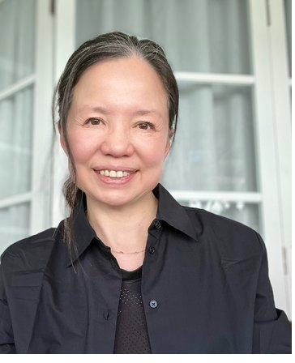

Psychotherapy & Counselling · Singapore
Integrative Gestalt psychotherapy for individuals and couples. A grounded, relational approach to anxiety, trauma, burnout, and what gets carried into adult life.

Psychotherapy & Counselling · Singapore
Integrative Gestalt psychotherapy for individuals and couples. A grounded, relational approach to anxiety, trauma, burnout, and what gets carried into adult life.
About Your Therapist

I am a certified Integrative Gestalt psychotherapist and counsellor based in Singapore. I hold a doctorate in Psychotherapy Science from Sigmund Freud University, Vienna.
Before training as a psychotherapist, I had an established career in food and beverage technology, building on my background in Biochemistry from the National University of Singapore.
I trained in Vienna and worked with asylum seekers and trauma survivors during the refugee crisis in Austria — often across language and cultural divides. That work shaped how I think about contact and what carries across difference.
Registered Counsellor · Singapore Association for Counselling (SAC #C0470)
Therapeutic Approach
My work is grounded in Integrative Gestalt Therapy. The approach responds to who you are and what you're ready for.
Gestalt therapy emphasises awareness — what you notice, feel, and experience in the present moment — and how change begins in contact.
The work draws from psychoanalysis, phenomenology, Eastern philosophy, body-based approaches, and psychodrama. I work with attention to context — personal, relational, cultural, and social — supporting changes that feel grounded and can be carried into everyday life.
Psychotherapy Services
I offer psychotherapy and counselling for individuals working with anxiety, depression, burnout, OCD, work stress, trauma, and relationship difficulties. My practice also includes work with compulsive behaviours, sexual addiction, questions around gender and identity, dissociation, sleep problems, chronic pain, substance use, and disordered eating.
Individual Therapy
45–50 minute sessions shaped around what you're dealing with, your pace, and what feels important to you right now. A place to slow down and take a closer look at what's going on.
Couples Therapy
80-minute sessions working with both partners. We look at patterns as they show up in real time — how you speak, listen, defend, withdraw, or reach for each other.
Trauma Therapy
We work at a pace that feels manageable. The work stays in the present, with attention to what surfaces and how your body holds it.
Psychotherapy Fees
Individual Psychotherapy
50 minutes · In-person or online
Couples Counselling
80 minutes · In-person or online
The work usually begins in the first session. The most reliable way to know whether this fits is to sit through a full session and see what it's like.
Cancellation: Please let me know as soon as possible if you need to change your appointment. Cancellations made less than 48 hours before the session start time are charged in full.
Psychotherapy Practice Location
Notice: I'm moving to Tiong Bahru on 01 July 2026
Practice Address
20 Upper Circular Road, #01-13
The Riverwalk, Singapore 058416
2 min walk from Clarke Quay MRT Station (exit Boat Quay / Eu Tong Sen Str.)
Please arrive 5–10 minutes early to locate the office, settle in, and complete a short registration form.
For most people, therapy begins in the first session. The only real way to know whether working together feels right is to experience a full session.
Professional Memberships: Singapore Association for Counselling (SAC #C0470), Singapore Psychological Society, Association for Psychotherapists and Counsellors Singapore.
Common Questions
Psychotherapy is a place to slow down and look at what's actually happening — in your body, in your relationships, in the patterns that keep recurring. People come to gain footing, to make a difficult decision more clearly, to recover from something that's left a mark, or to understand themselves better. The work is steady rather than dramatic.
A session feels like a conversation in a living room — unhurried, natural, grounded. Sometimes Mulan, my Singapore Special dog, is there too, quietly present. We sit with what's actually happening for you. The pace is yours. Therapy isn't something that happens to you here. It unfolds with you.
Psychotherapy in Singapore can cost between $40 and $350 per 50-min session. At my practice, it is $220. The therapeutic outcome is correlated with the skill of the therapist, the therapeutic alliance and the client's willingness to participate in the work.
Read the information on this site. Book an appointment using the link, or send me a message. Arrive 5–10 minutes before the first appointment to fill out a short form. Your therapy begins from this point.
It depends. If you come to solve a particular issue, therapy ends when the solution is in sight. For symptoms that seriously interfere with daily functioning, effective work happens over months. Most clients continue because the work keeps being useful — a place to think, to notice what's shifting, and to stay in contact with themselves through whatever comes next.
In practice the two overlap. Counselling tends to be shorter and focused on a specific issue or transition — a job change, a bereavement, a difficult relationship. Psychotherapy works longer and over wider ground. The change is gradual and permanent. Clients come to therapy as part of their lives and use the sessions as a continual process. I'm trained and registered for both, and most of my work is psychotherapy. The line is rarely sharp — what begins as counselling often becomes psychotherapy when something older surfaces.
Yes. I work online with people who are overseas — some I never get to meet in person. For clients in Singapore, sessions are usually in-person at the practice. We work out together which fits early on.
CBT identifies patterns of thought and behaviour and works to change them through structured techniques and homework. It's effective for many things, particularly defined issues like phobias and specific anxiety presentations. Gestalt works differently. The work is in awareness of what's actually happening for you in the present moment — in your body, in the room, in the relationship between us. Awareness in Gestalt is like lighting up a dark room. With the light on, we can see where we need to go, and change follows. Without it, we force ourselves across the dark room and stumble — which is why behaviour change alone is not sustainable. Both Gestalt and CBT are evidence-based. The choice often comes down to whether you want a structured protocol or a longer-form relational process.
Couples therapy can benefit your relationship when you're courting, coming out to family, thinking of a life together, facing a crisis or infidelity, considering separation, co-parenting, or when someone has taken ill.